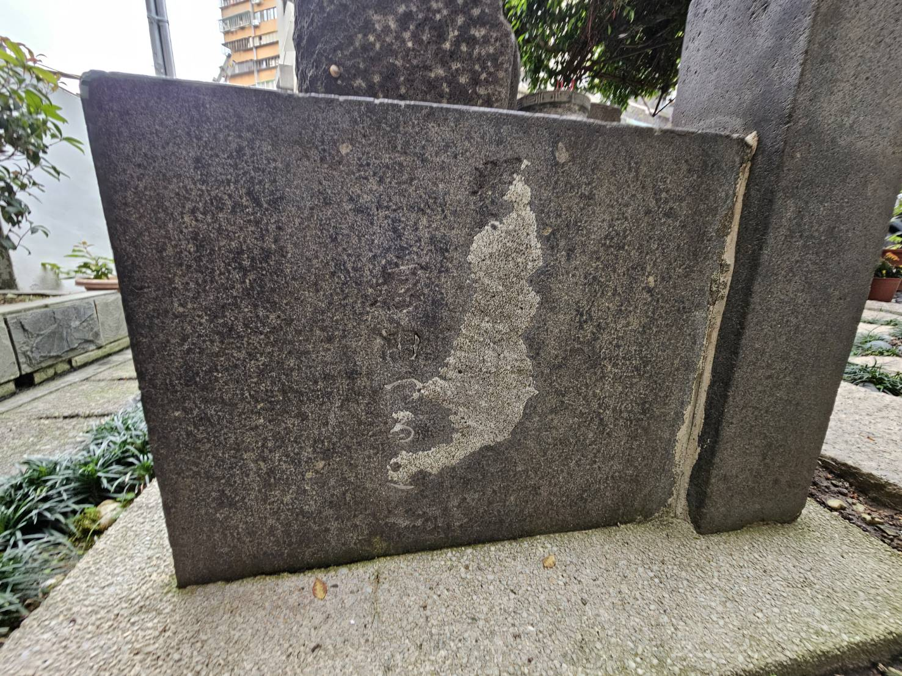
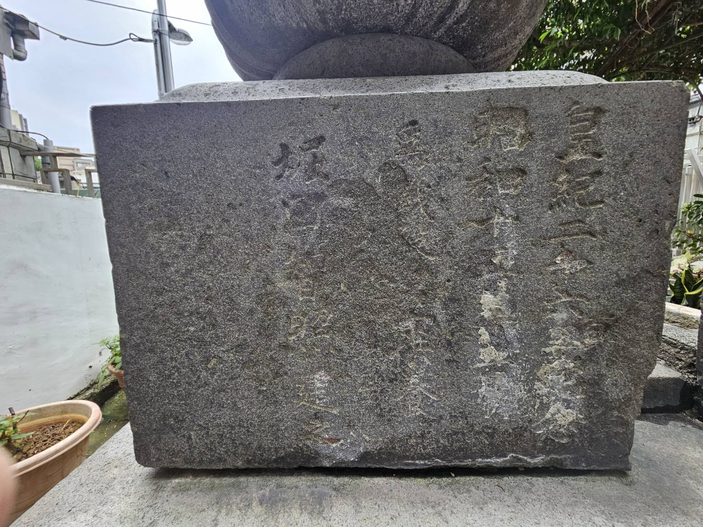
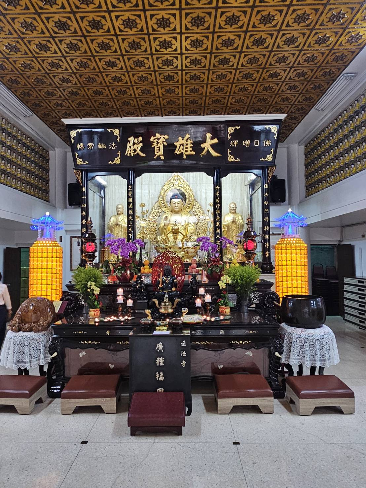
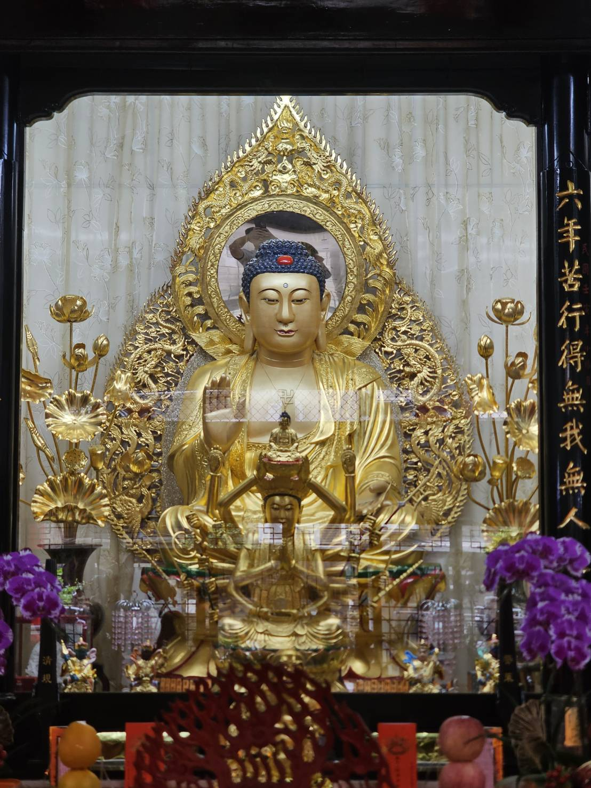
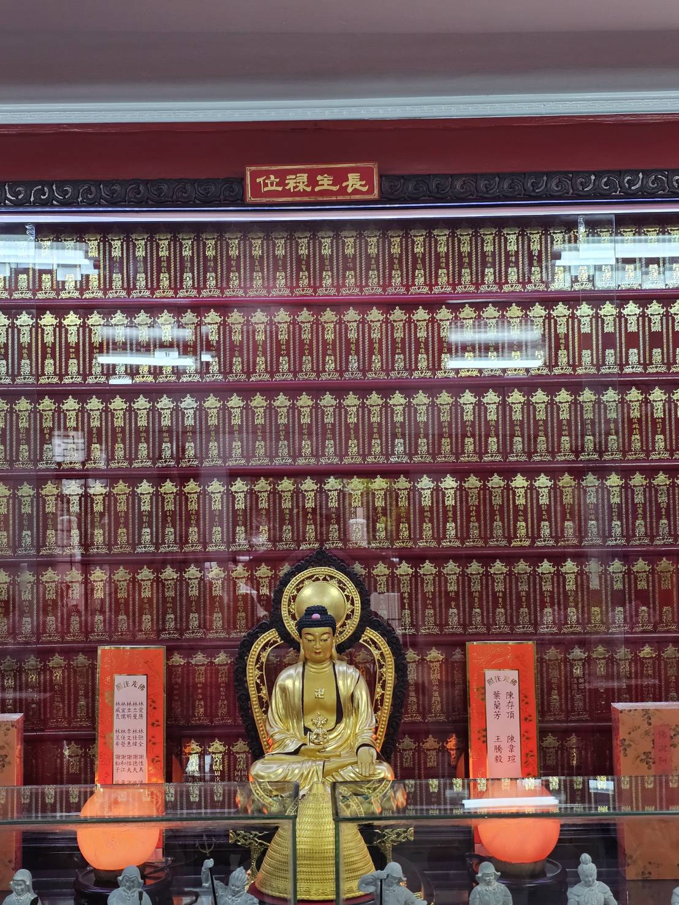
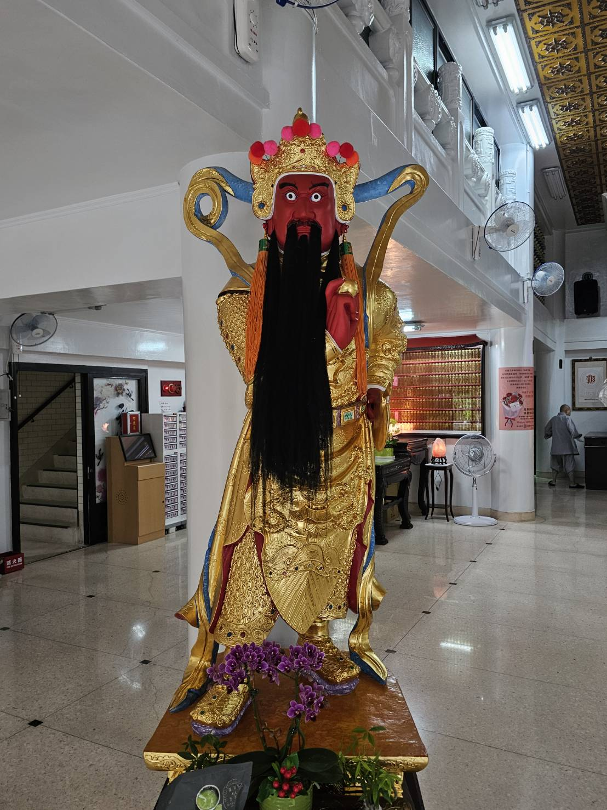
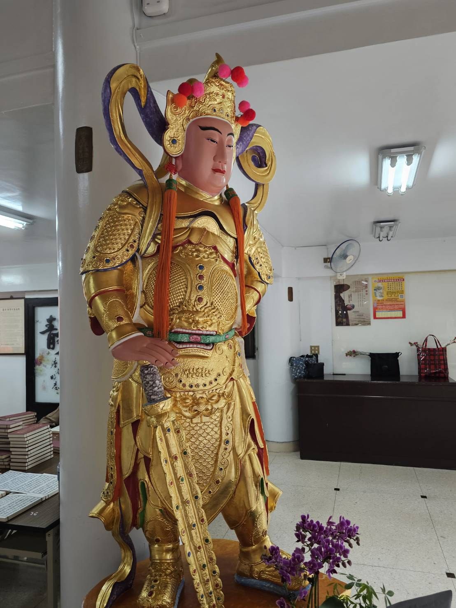
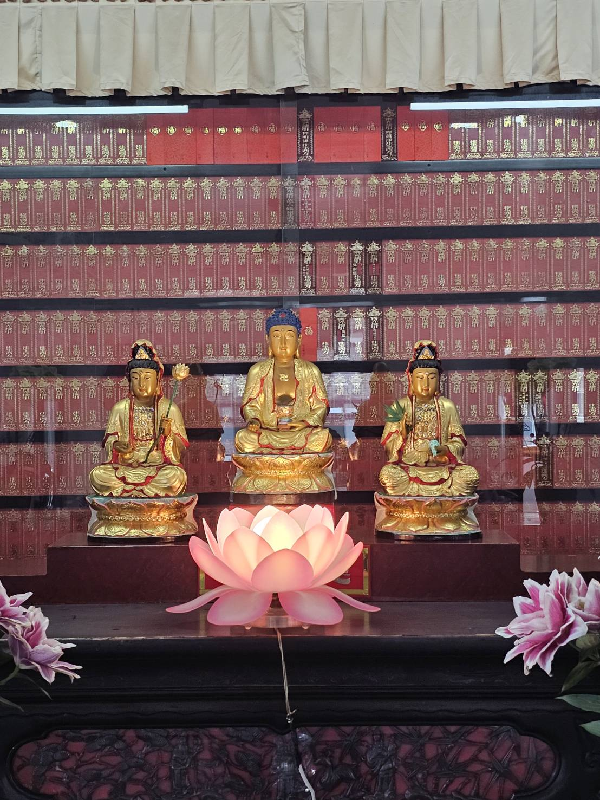
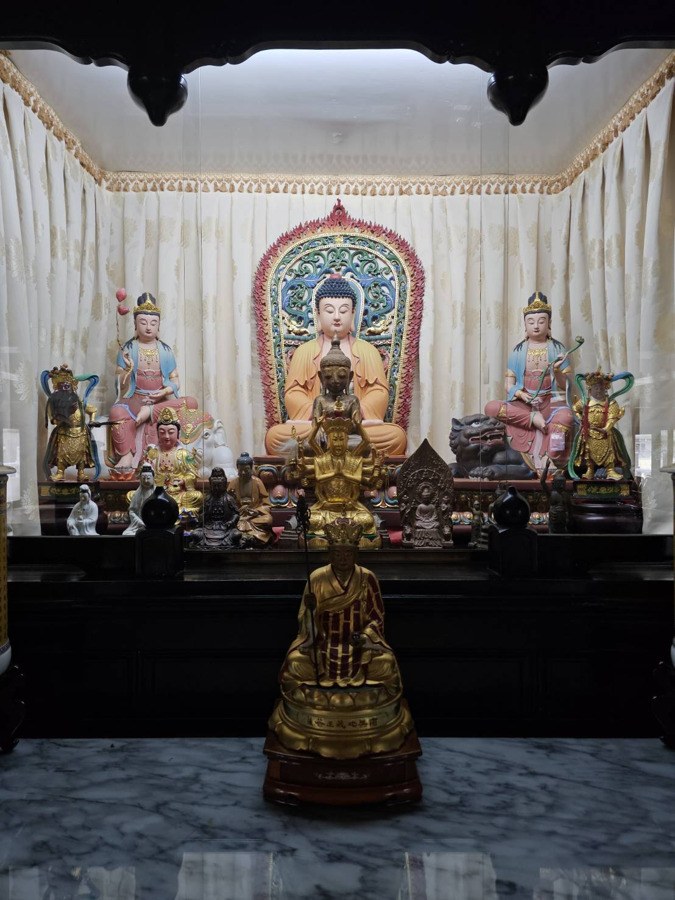
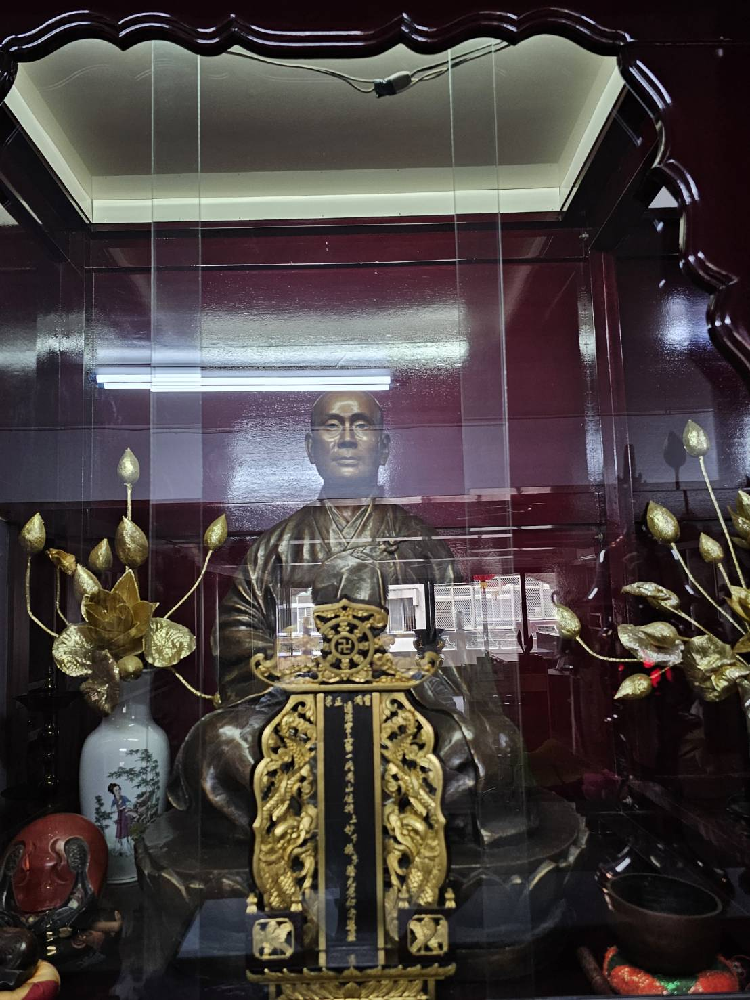

禪師偈語

本寺簡介
通法禪寺，溫柔地坐落於台北市中正區。這裡是一處都市中的心靈淨土，我們秉持著曹洞宗法脈，以慈悲與智慧接待每一位到訪的信眾。
寺內環境清幽，殿宇巍峨，將傳統的禪宗美學引入現代都市。無論您是尋求身心安頓，還是想研習佛法智慧，通法禪寺都隨時為您敞開溫暖的大門。
壹
法脈傳承
通法禪寺傳承曹洞宗法脈，自洞山良价禪師至現世，經歷千年法乳滋潤，於台灣弘揚禪法。
貳

文物典藏
院外
耳藥師佛

藥石佛銘文

十一面觀音

十一面觀音銘文

觀音

觀音銘文
一樓大殿

釋迦摩尼佛與二尊者

觀音

不動明王與二侍者

地藏王菩薩(右)

地藏菩薩(左)

韋馱聖眾菩薩

韋馱天
三樓地藏殿

地藏王菩薩(前)

地藏王菩薩(右)

地藏王菩薩(左)

地藏王菩薩(後)
四樓文殊殿

本殿布局

文殊菩薩

妙振和尚

達能和尚
參
現任執事
住持：達能老師和尚
現任法脈傳承者，領大眾修習默照禪風。
秉持曹洞宗「動靜體悟」之精神，於現代都市中弘揚禪法。
肆
寺務活動
- 共修法會每月初一、十五 09:00 - 11:30
- 禪修班每週日 09:00 - 11:00
- 法華經持誦每月初八 14:00 - 16:00
- 念佛法會每季舉辦一次
伍
聯絡方式
電話
(02) 2345-6789
Line
@tongfasi
地址
台北市中正區○○路○○號
信箱
info@tongfasi.tw
開放時間
週一至週日
09:00 - 17:00
陸